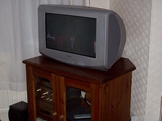

Introduction
This is a journal of my web development.
23rd September 2017
Installed StackEdit, created file on google drive, synced html fileSmater way to learn HTML CSS chapter linking css files Smater way to learn HTML CSS chapter on css classes
24th September 2017
Decided to enter code directly to GitHub website when i use my chromebook. I can use Notepadd++ on my pc to enter code and and sync to GitHub
Used the html preview to view my code which i have saved as bookmark:
css styling commands font-weight 100 - 900 font-weight 400 being normal size. You can also use light, normal, bold and bolder.
font syle example: font-style: italic, font-family examples font-family: arial; or font-family: "Times New Roman";Use the span tag if you want to style bits and pieces with using a class name. example ""learning is fun"
Letter spacing example: letter-spacing: 1em; will increase the gap between text. Line Height example line-height: 1.2em is normal. Anything higher than this will increase the line height
25th September 2017
Using the color to highlight text example: color: blue; or you can select color using hex value: color:#cc0000. You can use www.colorpicker.com to get a list of hex colours or alternatively you can go to www.crockford.com/wrrrld/color.html to get list of colour names.
Text align example using css. text-align: left, right, center or justify;
First line indent example using css command: text-indent:
1em;
The second line of text will then be left aligned
With a blockquote the whole paragraph
of this example is indented using the html tag blockquote.
Margins completed exercise margin-top, margin-right, margin-bottom, margin-left. Defined various classes going through exercises.
26th September 2017
You can put a border round a paragraph and many other HTML elements. You can also specify single border lines eg border-left, border-right etc in CSS. You can also specify different types of borders: dotted, dashed, solid, double, groove, ridge, inset, outset. When specifying the css code it should follow this example convention: border: 1em solid red;
Padding - When you want to padding around a paragraph or other elements you sometimes want to create a bit of breathing space - ie white space between the border and whats inside.
27th September 2017
Inheritance - html page is organised into parents and children. When you style in css the inheritance can be overwritten with a new value. When you override an inherited size with ane em value the new em value is relative to the inherited size
28th September 2017
Grouping - You can group elements to style your code. Grouping example h2, h4 {color: blue;} would group both h2 and h4 heading and the colour would be blue. Completed inheritance exersice on Smater way to learn HTML and CSS
29th September 2017
An id is similar to a class but more exclusive. An id can only be assigned once to an HTML document. In this example i am going to code an h5 heading with an id:, see below
This is an ID HEADING
28th September
See footer for div example
29th September
Images fall in the natural flow of html and are defaulted to display on the left side of the screen. See example of image
30th September 2017
Review sync conflicts
IMG SRC - Including addition tag information to image src example <"img src="image/picture.jpb alt="test picture" width=50 height=50">
For some reason the <"footer"> tag i created is to demonstrate the div example is missing as well as the <"img src"> tag example so i will need to check on my updates on github and see if i can restores this. I found the file stored on notepad++ which didn't sync with the version on GitHub. I have copied and pasted the div and footer code directly into GitHub and synced the data.
Block vs inline - Most major html elements are block, headings, paragraphs, lists, tables, divs. This means the browser does not put any other elements beside it so any new block element you create will start on a new line. Block elements can be placed side by side using the style FLOAT. Inline elements such as image, and href will sit side by side another element, however you can style this to display as a block element by using css style display: block;
For some reason the <"footer"> tag i created is to demonstrate the div example is missing as well as the <"img src"> tag example so i will need to check on my updates on github and see if i can restores this. I found the file stored on notepad++ which didn't sync with the version on GitHub. I have copied and pasted the div and footer code directly into GitHub and synced the data.
Block vs inline - Most major html elements are block, headings, paragraphs, lists, tables, divs. This means the browser does not put any other elements beside it so any new block element you create will start on a new Block elements can be placed side by side using the style FLOAT. Inline elements such as image, and href will sit side by side another element, however you can style this to display as a block element by using css style display: block;
Include addtional information to imc src tag, see example <"img src="image/balloon.jpg alt="picture of balloon" width="50" height="50">
1st October
Positioning an image. You can isolate an image on it's own line by using a css style display: block;. The browser positions the image to the left and you can use the margin-left style to move this across to the right. The example below shows an image displayed as a block with a left margin of 2em
To Center an image use the following styling: img.centerImage {
display: block;
margin-left: auto;
margin-right: auto;
}
alternatively you can do the
following margin: 0 auto 0 auto;
Float an image - If you want to create text next to an image you use the float styling, see example below:
img.textOnLeft {
float: right;
}
If you have a short paragraph and you have another
tag underneath this will also appear to the side of the image. To prevent this from
happening you can style the following code: p.noWrap {
clear: both;
}
The paragraph of this text should appear on the left and the image should appear on the right. I am continuing typing to see if this text will wrap around the image. All being well the text should no appear right next to the image
New parapraph shoud appear under image as the clear: both styling is applied
2nd October 2017
Links - You can use hyperlinks to direct users to pages on your site and external sites, see example <"a href="www.bbc.co.uk/sport">BBC sports home page
If your linking to a webpage in the same on the same folder you can use <"a href="products.html">products page<"/a>and if your linking to a page on your website on a different page you would enter <"a href="catalog/products.html"> catalogue products page<"/a>
This example links to the job roles webpage Job Roles Link
8th October
I have been playing about with GitHub for a few hours this weekend. I downloaded Git Bash which took ages to install and then tried to get my project sync, but after several attempts was unable to get this to work so i deleted the repository and started again. I downloaded a kindle book and went through the step by step insructions but I found there was differences on the git status prompt when i check i checked the kindle book with the code dispayed on my pc. I decided to watch a youtube video and start again, which i have more success with. First of all i created a repository on GitHub with a read me file. I then cloned this to a folder on my pc. i copieied the the HTML files in the folder with the readme file. After that open GitBash and used the following commands git add -A, git Status, git commit -m "message" and git push
9th October
Linking to pages on a website - When you link to a page on your domain site you can skip the domain name. http://www.bbc.com is the same as http://www.bbc.com/index.html. If your linking to subfolders on your site you can skip the domain but you will need to include the subfolder names. If your linking down a level on your website you can use the following example <"href ="../products/text-editors.html">Frequently asked questions<"/a>
Linking to a location on a page - If you want to link to say a heading you can create an id, see example <"h2 id ="fame-claim">Our claim to fame The link information would be as follows: <"a href="#fame-claim">Read all about a claim to fame.
Opening a link site in a new window - This is an example <"a href="http://www.bbc.com" target="_blank">BBC Website<"/a>
Styling links - You can style links by changing the font, or font colour, making the
text larger. Here are some examples. This example changes the colour
a {
color: purple;
}
This example changes the font when you hover over the link
a: hover {
text-decoration: none;
font-weight: bold;
}
You can also change the appearance of text at the moment you
select the link, see example
a: active {
font-size: 1.25em;
}
You can also change the appearance after you selected the link, see example
a: visited {
color: green;
}
10th October
Clickable Images Links - You can use images to link to pages as well as text, see example:
11th October
Image Maps - An example of and image is If you have images of two buildings and you wanted to link each building to a different website see example code: <"img src="Buildings.jpg" alt="Two Buildings" width="500px" height="800px" usemap="#buildings" "> The #buildings is the id. The next thing you need to two do is map the the two images. You do this by using the following code <"map name="buildings"> As well as rect you can use circle, polygon to define the area.
15th October
See example below of image map. Left side of the image creates a link to bbc website and the right of the image links you to wikipedia.